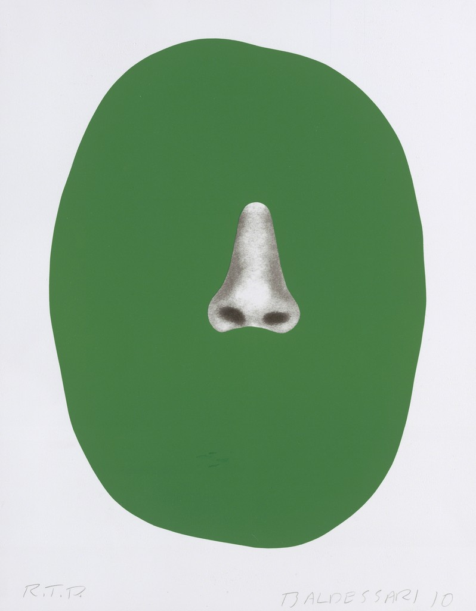
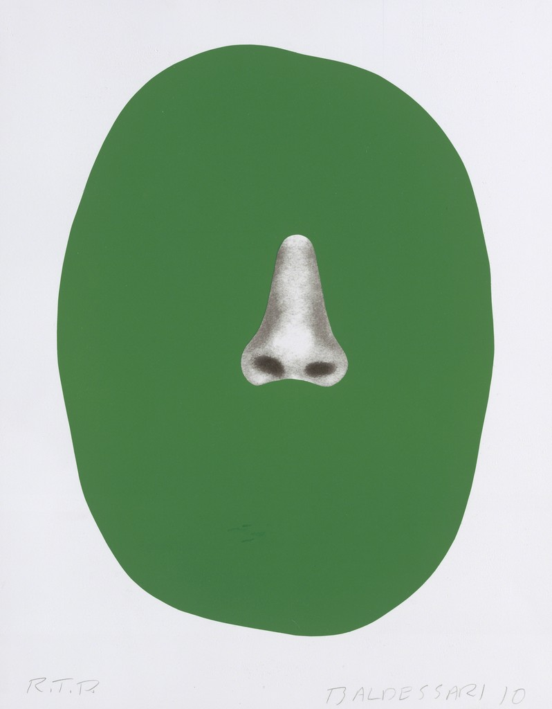

JOHN BALDESSARI – NEW WORKS
Jun 11th – Oct 6th
Zurich, Rämistrasse 37
Mai 36 Galerie is please
to present an exhibition with
new works by legendary
American conceptual artist,
JOHN BALDESSARI.
VISIT AND

 

His two-dimensional works often incorporate
found images,composed in layers or presented as distinct
pieces with an element of surprise, like a brightly colored
geometric shape in the place of a face or a starkly printed
sardonic caption. Baldessari has demonstrated a lasting
interest in language and semantics, articulating these
concerns through the use of puns or the juxtaposition of seemingly unrelated images and words.
Opening
Sunday, June 12, 2016, 11 a.m.
Exhibition
June 11 - October 6, 2016
Opening hours: Tue-Fri 11 a.m. to 6.30 p.m., Sat 11 a.m. to 4 p.m.